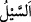
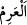
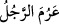

Onların iki bahçesini, buruk yemişli, acı ılgınlı ve içinde biraz da sedir ağacı bulunan
iki (harap) bahçeye çevirdik.
“Ama onlar” Sebe’nin evlatları vefadan “yüz çevirdiler.” Cefâya yöneldiler, nimeti
inkâr ettiler, nankörlük ettiler. Kendilerini ilâhî intikama hedef yaptılar. Şükrü zâyi
ettiler. Onlar hallerini değiştirdiler ve onlar için durum değiştirildi.
İbn Abbâs (r.a.) der ki: “Allah Teâlâ Yemen’in on üç köyüne on üç peygamber
gönderdi. Bu peygamberler onları îman ve tâate dâvet edip Allah’ın nimetlerini
hatırlattı ve Allah’ın azabından korkuttu. Onlar ise peygamberleri yalanladılar ve “Biz
O’nun üzerimizde bir nimeti olduğunu bilmiyoruz. Rabbinize söyleyin de gücü yetiyorsa
bu nimeti bizden alıkoysun.” dediler.
“Bu yüzden üzerlerine Arim selini gönderdik.”
“__WORD__ (sel)” kelimesi, aslında suyun gitmesi mânâsına masdardır. Başka yere yağan
yağmurun sana gelen suyuna denir. “__WORD__ kelimesi, şiddet ve zorluk demektir. Bir
kimsenin ahlâkı kötü ve çetin olunca “__WORD__ denir.
Sel, arim’e, yâni zor ve çetin olmaya izâfe edilmiştir. Bu mevsûfun sıfatına izâfe
edilmesi kabilindendir. Çetin, zorlu ve şiddetli yağmurun seli demektir. Yahut zorlu
emrin seli demektir. Yâni sonra üzerlerine çetin ve güçlü sel gönderdik.
İbn Abbâs (r.a.): “Arim, vâdînin ismidir.” der. Yâni suyun kendisi tarafından geldiği
vâdînin ismidir.
Bazıları der ki: Arim, suyun toprağa yükselmesi için toplandığı seddir. Yâni Himyer
lügatına göre “arim” su bendinin adıdır.
Ya da “arim” erkek fare/köstebektir. Sel ona nisbet edilmiştir. Çünkü Allah Teâlâ
onlara demirden azı dişleri olan erkek çöl köstebekleri gönderdi. Bu köstebekler
kendilerine yaklaşan kedileri mutlaka öldürürdü. İşte bu köstebekler seddi delip onların
üzerine yıktı. Sebeliler’in bahçeleri ve evleri sular altında kaldı. Bu köstebek hep
deliğinde kalıp dışarı çıkmaz. Gözü görmez ve sadece koklayarak hisseder.
Aristo der ki: Kör sıçan/köstebek dışında her hayvanın iki gözü vardır. Bu hayvan
türâbî/aslı topraktan olduğundan bu şekilde yaratılmıştır. Allah bu hayvan için toprağı
balık için su neyse onun gibi kılmıştır. Gıdası yerin içindedir. Yerin dışında gücü ve
hareketi yoktur. Gözü olmadığı için Allah onun yerine ona hassas bir işitme vermiştir.
Onun için uzak bir mesafeden hafif bir yere basmayı bile hisseder. Bunu hissedince de
hemen yeri kazmaya başlar. Denilir ki bu farenin kulağı başkasının gözü
mesabesindedir. Güzel kokudan kaçar. Pırasa ve soğan kokusunu sever. Çoğu zaman
bunların kokusuyla avlanır. Pırasa ve soğan kokusu alınca bunlar için çıkar. Acıkınca
ağzını açar ve öylece bekler. Allah ona sinek gönderir. Sinek farenin ağzına konar. O da
onu ağzına alır. Kanı göze sürülürse göz hastalığına iyi gelir. Hayâtü’l-hayevân’da
böyle geçmektedir.
Kâşifî der ki: “el-Muhtâr’da şöyle nakledilir: Sebeoğulları’nın Yemen vilâyetinden
olan Me’rib civarında iki dağ arasında bir menzili vardı. O menzilin en yukarısından en